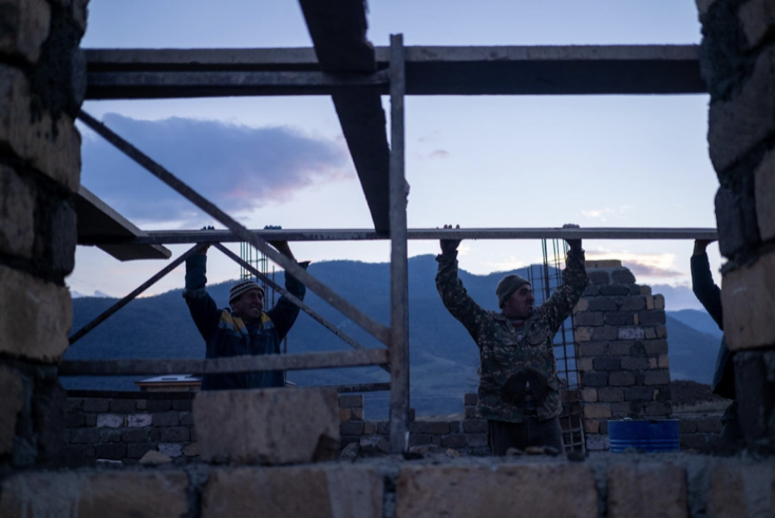

Ղարաբաղի բնակիչներ 48 ամյա Նելսոն և 44-ամյա Սուսաննա Հայիրյանները
հոգնել են տեղափոխվելուց:
Զույգը երեք անգամ տեղափոխվել է սկսած այն պահից, երբ նրանց հայրենի
գյուղը 2020 թվականի Ղարաբաղյան պատերազմի ժամանակ անցավ Ադրբեջանի
վերահսկողության տակ։ Այսօր Ղարաբաղի դե-ֆակտո իշխանության
քաղաքականության արդյունքում նրանք ստիպված են կրկին տեղափոխվել:
Հայիրյաններն այն 38,000 մարդկանց թվում են, ովքեր ըստ Ղարաբաղի
կառավարության կորցրել են իրենց տունը պատերազմի ընթացքում։
Ժամանակավոր կացության հարցերով շուրջ 16 ամիս զբաղվելուց հետո, այժմ
կառավարությունը տեղահանվածների հետ կապված նոր ծրագիր ունի։
Մոտավորապես երկու տարի անց, 2500 ընտանիք (ըստ նախնական տվյալների)
կկարողանա տեղափոխվել նորակառույց գյուղեր:
Այս տարվա սկզբին, Լեռնային Ղարաբաղի բնակարանային հարցերի կոմիտեն նոր
ծրագրեր է մեկնարկել։ Ըստ դրանցից մեկի՝ կառավարությունը Ստեփանակերտ
(Խանքենդի) քաղաքում բնակարան կտրամադրի պատերազմում զոհված կամ անհետ
կորած զինվորների ընտանիքներին։ Ստեփանակերտում բնակարաններ
կտրամադրվեն նաև Շուշի և Հադրութ քաղաքներից տեղահանված ընտանիքներին։
Բոլորը կտեղափոխվեն նոր համայնքներում կառավարության կողմից տրամադրված
բնակարաններ.

Գյուղերից տեղահանված փախստականներն այժմ ապրում են Ստեփանակերտի նախկին հյուրանոցներից մեկի մոտակայքում
Տասը համայքում նախատեսված 957 տների կառուցումը կարժենա մոտ 94,5
միլիոն դոլար, որը կհատկացվի պետական բյուջեից, «Հայաստան»
համահայկական հիմնադրամի և անհատ բարերարների միջոցներից։
Կառավարությունը նախատեսում է նաև վերանորոգել Ղարաբաղի
վերահսկողության տակ գտնվող տարածքում պատերազմի հետևանքով վնասված
տները:
«Հայաստան» համահայկական հիմնադրամն արդեն սկսել է մեկ նոր համայնքի
շինարարությունը՝ Աստղաշենի հարևանությամբ։ Չորս գյուղերից՝ Սղնախից,
Մոխշմհատից, Մադաթաշենից և Ջրաղացներից տեղահանված ընտանիքները
կվերաբնակեցվեն այստեղ՝ Նոր գյուղում։ Այն կառուցում է Կապավոր ՍՊԸ-ն,
որի սեփականատերը արմատներով Սղնախ գյուղից, ռուսաստանաբնակ
ձեռնարկատեր է:

Եղիշե Ղահրամանյանը, ով մինչև պատերազմը Սղնախի գյուղապետն էր, այժմ
ապահովում է հաղորդակցությունը շինարարների, կառավարության և
գյուղացիների միջև:
«Բոլոր գյուղացիներին մեկ առ մեկ զանգել ու հարցրել եմ, թե արդյո՞ք
պատրաստ են բնակվել նորակառույց գյուղում»,- ասաց պարոն Ղահրամանյանը.
«Բոլոր գյուղացիները միանշանակ համաձայն էին»:
Բայց ոմանց, ինչպես Հայիրյաններին, ովքեր պատերազմից հետո, ամիսներ
շարունակ պայքարել են իրենց կյանքը վերսկսելու համար, կառավարության
այս քաղաքականությունը կարող է նոր անկայունություն բերել:
2020թ․-ին՝ պատերազմի սկսվելուց որոշ ժամանակ անց, երբ Սղնախն անցել է
ադրբեջանական զինված ուժերի հսկողության տակ, ընտանիքը սկզբից փախել է
Հայաստան։ Պատերազմից հետո նրանք վերադարձել են Ղարաբաղ, Ստեփանակերտ
քաղաք, որտեղ կառավարությունը վճարում էր նրանց բնակարանի վարձը։ Բայց
2021թ․-ի սկզբին վարձավճարների կտրուկ աճից հետո, կառավարության
տրամադրած օգնությունը բավարար չէր, և նրանք տեղափոխվել են
մայրաքաղաքին հարակից Շոշ գյուղ։ Այսօր պետական սուբսիդիան ծածկում է
նրանց ամսական 210 դոլար վարձավճարից 170 դոլարը։ Գումարի մնացած մասը
նրանք վճարում են տեղական շուկայում թարմ մթերք վաճառելով:
Մեկ անգամ ևս տեղափոխվելը նրանց համար կնշանակի վերսկսել ամեն ինչ
նորից:
Նրանք ստիպված կլինեն դադարեցնել աշխատանքները շուկայում և վերադառնալ
գյուղատնտեսությանը՝ կառավարության կողմից տրամադրված 1000 քառակուսի
մետր հողատարածքում։ Հայրիյանների դուստրը՝ 23 ամյա Նանարը, ով հիմա
Շոշի դպրոցում արվեստի ուսուցիչ է աշխատում, ստիպված կլինի նոր
աշխատանք գտնել, քանի որ նոր կառուցվող գյուղում մանկապարտեզ և դպրոց
չի նախատեսվում:
«Արդեն սովորել եմ դպրոցին ու այստեղ դասավանդելուն, չէի ուզենա այս
աշխատանքը թողնել»,-ասում է Նանարը:
Նրա հայրը՝ Նելսոնը,
նշեց նաև, որ կառավարության ռեսուրսները կարող էին ավելի լավ ծախսվել,
եթե մարդկանց թույլ տրվեր որոշել, թե որտեղ են ուզում ապրել:
«Լավ կլիներ, եթե փողը հենց գյուղացիներին տային, որ նրանք կառուցեին
իրենց տները։ Այդ ժամանակ ամեն մեկը կկարողանար կառուցել իր տունն
այնտեղ, որտեղ ուզում է։ Կարող է ես ուզում եմ Հայաստանում կառուցել
այն, կամ հենց այստեղ՝ Շոշում»,-ասում է Նելսոնը:
But the government believes the new policy will help Karabakh Բայց
կառավարությունը ու բնակարանային հարցերի կոմիտեն վստահ են, որ այս նոր
քաղաքականությունը կնպաստի Ղարաբաղի «համաչափ զարգացմանը, ինչպես նաև
հաղորդակցության և արտադրական ուղիները պահելուն»:
Կառավարության քաղաքականությունից բացի, Ստեփանակերրտում այժմ նաև
բավարար քանակով բնակարաններ չկան տեղահանվածների համար։ Պատերազմից
հետո կացարանի ինտենսիվ պահանջարկը հանգեցրել է քաղաքում բնակարանների
վարձակալման գների աճին. օրինակ՝ երկու սենյականոց բնակարանի միջին
վարձավճարը 80 դոլարից հասել է 200 դոլարի:
Լեռնային Ղարաբաղում ամենուր կարելի է ընթացիկ շինարարություններ
տեսնել։ Նոր Գյուղը Ստեփանակերտից ընդամենը 19 կմ հեռավորության վրա է,
բայց ամբողջ հանրապետության տարածքում կառուցվում են այլ նոր
համայնքներ: Կառավարության ծրագրով նախատեսվում է նոր կառուցվող
բնակավայրերը տեղակայել արդեն գոյություն ունեցող գյուղերի
մոտակայքում, որպեսզի ավելի հեշտ լինի էլեկտրաէներգիայի, ջրի և գազի
մատակարարումը:
Բազմաթիվ ընտանիքներ սպասում են նոր բնակավայրեր տեղափոխվելուն։
Բնակարանային հարցերով կոմիտեի տվյալներով մինչ օրս 1500 ընտանիք նոր
համայնքներում տուն ստանալու հարցում է ներկայացրել:
«Մենք հաշվառել ենք չորս գյուղի բնակիչների, և բոլոր տեղահանվածներին
տեղավորելու համար անհրաժեշտ է 136 բնակարան»,- նշեց Նոր գյուղի
շինարարությունը ղեկավարող Դավիթ Գրիգորյանը։ Ընդհանուր առմամբ մինչև
2022թ․-ի ավարտը, գյուղում կկառուցվի 221 բնակարան։ Մինչև տարեվերջ
կավարտվի նաև բոլոր անհրաժեշտ ենթակառուցվածքների կառուցումը՝ ներառյալ
ճանապարհները, ջրագծերը, էլեկտրաէներգիայի ու գազի մատակարարման
համակարգերը:
Սղնախի գյուղապետ Եղիշե Ղահրամանյանը նշեց, որ Նոր գյուղը կառուցվում է
փուլ առ փուլ, ուստի ոչ բոլոր ընտանիքները կկարողանան միանգամից
բնակվել այնտեղ։ Առաջին բնակարանները կտրամադրվեն այն գյուղացիներին,
ովքեր օգնում են շինարարական աշխատանքներում.
Նոր կառուցվող գյուղը Աստղաշենի հարևանությամբ
Ջրաղացներ գյուղից Գեղամ Ավանեսյանը, ով այժմ ընտանիքի հետ ապրում է Աստղաշենում մեծ ցանկություն ունի այստեղ տեղափոխվելու։ Նա իր նախկին հարևան Աշոտ Առուստամյանի հետ օգնում է կառուցել Նոր գյուղը։
Գեղամը և Աշոտը շինհրապարակում
«Այս պահին Աստղաշենում տունը վարձակալում ենք, բայց ուզում եմ մշտական
տուն ունենալ երեք երեխաներիս համար»,- ասում է Գեղամը։ «Այստեղ
աշխատելը լավ է, քանի որ և՛ եկամուտ ենք ստանում, և՛ առաջինը նոր տուն
ստանալու հնարավորություն»:
Ծնունդով սղնախցի Անուշ Լալայանը լսել է ընթացող շինարարության մասին,
սակայն չի պատրաստվում միանալ իր նախկին հարևաններին նոր գյուղում։
Անուշն այժմ ապրում է Ստեփանակերտում իր 11-ամյա դստեր հետ:
Կառավարության ծրագրով նրանք կկարողանան մնալ քաղաքում, քանի որ նրա
ամուսինը զոհվել է պատերազմի վերջին օրերին:
«Թեև ամիսներ են անցել, բայց հիմա էլ, երբ արթնանում եմ, առաջին
վայրկյաններին չեմ հավատում, որ Սղնախի իմ տանը չեմ, որ կյանքս
գլխիվայր շրջվել է, հա՛մ սիրելի գյուղս եմ կորցրել, հա՛մ ամուսնուս»,-
ասում է Անուշը:
“«Ես շատ էի սիրում իմ գյուղը, և եթե այն վաղը լիներ հայկական
վերահսկողության տակ, ես առաջինը կվերադառնայի այնտեղ։ Բայց ինձ ոչինչ
չի կապում նորակառույց գյուղի հետ, հատկապես երբ ամուսինս այլևս ինձ
հետ չէ»: